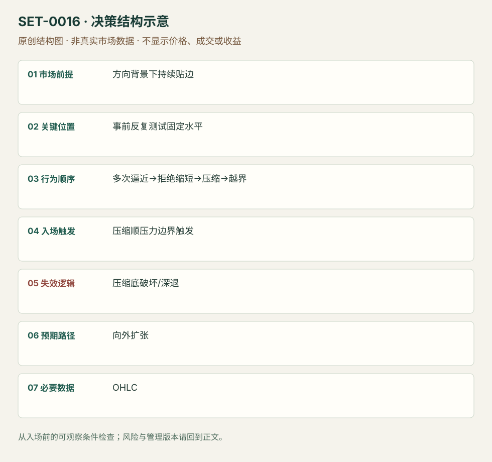

反复逼近固定边界的压力突破
Buildup / Pressure Breakout · SET-0016 · reviewed · v1.0.0
盈利证据：not_established。审查范围与来源版本见第13节；未知字段保留缺失原因。
1. 名称与快速概览
事前固定水平遭到反复试探，而每次退离更短，价格贴近边界压缩；顺压力越界时考虑扩张。压缩底部被破或价格重新深退说明压力假说失效。
记录口径：PA core；必要数据 OHLC、volume_optional。名称性质：编辑性描述名，英文保留来源术语以便检索。reviewed 只表示本条规则与证据记录审查通过，盈利状态为 not_established。
2. 本质与行为假说
可见是反复接近、拒绝距离缩短。“供应耗尽”与“强买方承接”均可能解释，OHLC无法确定谁撤单或补单。
3. 适用市场与环境
方向背景支持，边界前形成紧密结构且距离近。早已大幅加速、远离可保护结构的追价不属于本条。
来源实用市场：美股盘中15分钟（SAI）、外汇/加密较长周期（Rayner）。
Session：美股/ES现金参考段 09:30–16:00 America/New_York；收盘前平仓。期货夜盘单独建背景，不将其并入开盘区间。
跨市场：本版不主张已经验证的跨市场迁移；更换市场必须重定数据来源、流动性与session。
4. 出现前的观察清单
必要：固定水平多次测试、反向摆动距离逐步缩短、紧压缩。增强：回撤量降。否决：水平下方每次遭到相同幅度拒绝、区间越来越宽。
5. 形成过程与状态转换
先定水平→多次逼近→逆向回撤缩短→贴边压缩→越界与恢复成交→管理；大幅退离压缩底则取消。
6. Entry trigger 与执行方式
Rayner在压缩区高外触发；SAI强调日内量能与盘前水平。以完成压缩和顺向越界为共同结构，是否等收盘分别记录，不视为统一固定参数。
7. Invalidation 与止损逻辑
压缩相反极值是结构否定位置；Rayner不同课程讨论1或2ATR缓冲，不择优拼接。SAI用pivot/趋势线收盘止损的一版另列。
8. Exit、target 与 trade management
先看更高周期事前阻力及压缩尺寸扩张路径；持续强推进可结构跟踪。失败越界回到压缩内部时退出，午后持仓受所选session结束约束。
9. 常见 variations
Ascending/descending triangle、buildup、flat-top if相同反复攻击序列合并。单纯对称三角或ii压缩未必有这组压力证据。
10. 失败方式与不交易条件
正常亏损：边界仍有补给而突破失败。未成立：只看最终三角形、未有反复水平攻击。偏离：大柱远离结构后追入。Rayner承认选漂亮例教学，不作抽样盈利证据。
11. 与相近 setups 的区别
12. 图表与案例解读
已实际查看SAI公开PDF页30的GME价格图。图中反复接近事先水平、下方回撤逐步收窄，随后越界展开；15分钟背景与分钟执行应分开。后续快速上涨是事后信息，不能当成入场前已知目标。此图支持日内压力结构；Rayner较长周期例只支持机制解释，不能核验同一日内参数。
- [VIS-000056] 来源PDF第30页图表；定位：PDF页序 30。GME反复压向水平与回撤收窄后的释放，价格图支持结构，文字止损版本须单列。 验证：chart_viewed_pdf_page。
本地原创示意（VIS-000073，非真实市场数据）：

小屏阅读可打开原尺寸示意图并缩放。

此图用于对照识别顺序与风险定义；不计入真实案例覆盖率。
视觉材料元数据与查看范围
- VIS-000056 · real_source_chart / structure_and_trigger / chart_viewed_pdf_page
品种：GME；日期：2021-01-22；周期：15分钟背景／5分钟执行；时区：未知/不适用
时区未在画面中核对；作者示例；不是独立成交审计 - VIS-000073 · synthetic_structure_diagram / illustration_only / generated_not_market_evidence
品种：未知/不适用；日期：未知/不适用；周期：未知/不适用；时区：未知/不适用
无真实品种、日期或价格：这是结构示意
13. 证据、分歧与未知项
Rayner图例多为较长周期；本版日内实践依据SAI，而非擅自把4小时持仓迁移到日内。具体ATR数值冲突作为版本记录。
- [EVD-000027] Rayner Teo，《#1: How to Trade Breakouts Like a Pro》，SRC-0059；定位：Trade breakouts with buildup。支持：价格停留阻力附近而没有深回撤，越区间高点入，止损需对应附近结构
- [EVD-000028] Rayner Teo，《#6: How to Avoid False Breakout》，SRC-0060；定位：BTC、EURUSD与USD/CAD例。支持：反向反弹幅度缩短、区间变窄；不追大幅加速后的突破
- [EVD-000029] SAI Trades，《My Experience: Trading the Open Playbook》，SRC-0013；定位：PDF页27、30。支持：日内固定水平下方压缩，多次测试和缩量，放量突破版本
审查边界：来源份数与独立核心核验分开；当前类别为 independent_context_only。正文中的概念、官方事实、衍生解说或同族资料只按其支持范围使用。
14. 可用于复盘的检查表
- ☐ 下单前的前提可核对：方向背景下持续贴边
- ☐ 事前标记位置：事前反复测试固定水平
- ☐ 行为按顺序出现：多次逼近→拒绝缩短→压缩→越界
- ☐ 实际触发符合选定版本：压缩顺压力边界触发
- ☐ 事先写明本次否定条件：压缩底破坏/深退
- ☐ 目标/路径只用当时已知信息：向外扩张
- ☐ 数据满足 OHLC；记录时间、点差、滑点、队列和未成交
- ☐ 记录截止平仓及规则偏离；正常亏损不事后改成“未成立”
15. 后续验证问题
按事前摆动记录拒绝距离而非事后拟合线；比较突破后继续补给与真正价格推进，固定ATR版本。
双向相关导航
- SET-0013 趋势内双内包压缩首次释放 压力突破必反复攻击事前水平、反向回撤缩短；本条必有嵌套母柱，不要求反复水平测试。
- SET-0010 突破后首次回测守住旧边界 回测突破需要越界已经发生；本条在第一次有效越界之前建立压力假说。
- SET-0033 TPO 台阶的破位与接受 0016 必须反复攻击且回调缩小，只有平边缘不够；本条依TPO拍卖台阶并观察外侧接受。